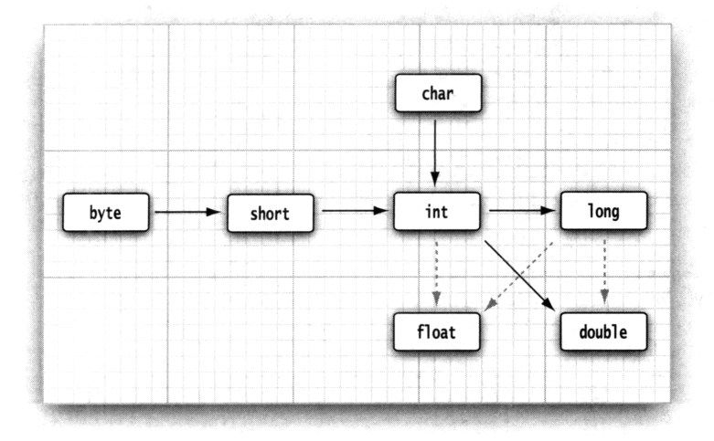

基本程序结构
细节可查阅 java官方语言规范
HelloWorld的编写与运行
- Java 代码都包含类中
- Java对大小写敏感
- 运行一个类会运行该类的
public static void main(String[] args) {}方法 - Java方法用
{}包裹 - Java语句用
;分割，一行可以有多条语句但不推荐。 - Java方法调用语法
object.method(parameters) - Java字符串用双引号包裹
""字符串"
1 | public class Main { |
手工编译运行
编译
1 | javac Main.java |
编译后会成成一个Main.class 文件
运行
1 | java Main |
如果Main有包名的话，需要根目录运行完整包名的Main
1 |
|
IDE 编译运行
直接点击图标即可运行。
Java 注释
Java 支持三种注释
-
//一边给用来注释一行 -
/*test*/一般用来注释一段 -
/**开始，以*/结束这种注释可以自动生成文档，一般用来标注类和类的方法
1 |
|
Java 数据类型
Java 是一种强类型语言，每个变量必须声明一种类型。
Java 共有8种基本类型，包括4种整型，2种浮点，1种表示Unicode编码的字符单元的字符类型char，1种布尔类型
整型
| 类型 | 长度( 子节) | 范围 |
|---|---|---|
| byte | 1 | -128~127 |
| short | 2 | -32768~32767 |
| int | 4 | -2147483648~2147483647 |
| long | 8 | -9223372036854775808~9223372036854775807 |
| char | 4 | ‘\u0000’to’\uffff’（0-65535） |
long 类型要加上l或L后缀，例如long l = 1111111L，为了方便区分一般使用大写的L
表示 十六进制数值 加上0x前缀 例如 int a = 0x10 对应10进制的16
八进制加上0前缀 例如int a = 010对应10进制的8
二进制加上0b前缀 例如0b10代表10进制的2
char 类型表示单个字符串 ， 在Java中用单引号表示。例如'A'代表字符A,Unicode编码单元可以表示为十六进制值，
其范围从\u0000到\Uffff。例如：\u2122表示注册符号，\u03C0表示希腊字母π。
转义字符\u可以出现在字符串常量或字符串引号外，其他所有转义（例如\n)都不可以
例如public static void main(String \u005B \u005D args) {}是完全合法并且可以编译运行的，不过并不推荐这么做。
浮点类型
| 类型 | 长度( 子节) | 范围 |
|---|---|---|
| float | 4 | 1.4E-45~3.4028235E38 |
| double | 8 | 4.9E-324~1.7976931348623157E308 |
float类型 可以值后加上f或F后缀，例如float a = 1.1F，无后缀默认为D
double类型 可以在值后加上d或D后缀，例如float a = 1.1D
注意： 浮点数内部使用2进制存储，禁止用在0误差的金融计算中
例如，命令System.out.println（2.0－1.1）将打印出0.8999999999999999，而不是人们想像的0.9
布尔类型
Java 中表示真假的类型为boolean
取值为true或·false
变量
Java中，每个变量必须指定具体类型，形式如下变量类型 变量名
例如
1 | double salary; |
命名规则
变量名必须由Unicode character开头，并且不能使用Java保留关键字。一般使用英文风峰驼风格书写。
详细规则参考Java变量名规则
变量初始化
声明变量后 必须要用赋值语句进行显示初始化。
运算符
自增自减++ 或 – 运算
1 | int i = 1; |
++i 和 i++ 在其他表达式中表现行为不同，(i)会先自增运算，(i)会先运算在自增。
不建议这么做
1 | i = 1; |
关系运算
相等用两个等于号表示例如3==7的值为false
不相等用!=表示
常用还有<(小于)>(大于)<=(小于等于)>=(大于等于)
布尔运算
| 布尔运算 | Java语法 |
|---|---|
| 与 | true && true |
| 或 | true || false |
| 非 | !true |
三元运算 ? :
例如 boolean isTrue = 表达式? true : false;如果 表达式 == true，返回true，否则返回false
位运算
Java 可以对整型数值进行位运算。即对二进制位进行运算。
&（“与”）、|（“或”）、^（“异或”）、~（“非”）
“>>”和“<<”运算符将二进制位进行右移或左移操作
">>>"运算符将用0填充高位；’’>>’‘运算符用符号位填充高位。没有’’<<<’'运算符。
例如
1 & 8二进制表示为0001 & 1000 = 0000所以1&8 = 0
1 | 8二进制表示为0001 = 1000 = 1001所以 1 | 8 = 9
1 << 1二进制表示为0001左移一位0010所以1 << 1 = 2
位运算可以用来屏蔽其他位获取单个位的值。
数学函数与常量
Math类定义了多种数学函数,例如平方根函数sqrt可以使用Math.sqrt(4)
Java 中没有 幂运算，需要结束Math的pow方法
基本类型转换

整型 低精度（短字节）可以向高精度（长字节）无损转换。
int可以无损转换为double
long转换位浮点型可能有精度丢失
当两个不同精度的基本数值类型进行运算时，另一个低精度的会自动转换为高精度类型运算
强制类型转换
高精度可以强制转换为低精度类型，但是会丢失一部分信息
1 | double x = 9.888; |
警告：如果试图将一个数值从一种类型强制转换为另一种类型，而又超出了目标类型的
表示范围，结果就会截断成一个完全不同的值。例如，（byte）300的实际值为44。
优先级
运算符优先级不同，例如乘除运算比加减运算优先级高
为了 方便记忆 ，所有优先运算使用()括号包裹即可整体计算。
枚举
如果一个变量的取值在一个有限的范围，可以定义枚举类型。
例如男女
1 | enum Sex{ |
字符串
在Java中字符串就是Unicode序列。串“ Java\u2122” 由5 个Unicode 字符J、a、v、a 和™ 组成。字符串是Java中的一个名为String的类，语法上使用双引号包裹""
截取
字符串的substring方法 两个参数为起始下标，结束下标（不包括）。数学表示为[index1,index2) 不包含index2下标。
截取长度=index2-index1
1 | String greeting = "Hello"; |
截取长度为3-0=3
拼接
Java语言使用+号拼接字符串。字符串可以加其他基本类型，结果为其他基本类型转换为字符串后在相加。
1 |
|
String的join 静态方法拼接，第一个参数为分隔符，后面的参数字符串。
1 | String s = String.join("/", "a", "b", "c"); |
字符串不可变
Java中字符串不可修改，String类对象称为不可变字符串，字符串Hello永远包含H、e、1、1 和o 的代码单元序列， 而不能修改其中的任何一个字符。我们只可修改字符串变量，让其引用另一个字符串。
Java将是创建的字符串放到公共存储池中，字符串变量指向池中相应的位置。如果复制一个字符串变量，原始字符串与复制的字符串共享相同的字符。
判断字符串相等
使用equals方法检测字符串是否相等。
不可以使用==比较字符串是否相等。
==操作比较的是变量在内存中指向的地址，Java可能将内容相同的字符串拷贝放在不同的位置。
实际上只有字符串常量共享，+或substring操作结果并不共享，使用==比较会导致bug出现。
1 | public static void testEquals() { |
空串与Null
空串""是长度为0的字符串，以下代码可以检测字符串是否为空。
1 | "".equals(s) |
空串是一个String对象。
null是一个特殊的值，表示变量没有引用任何一个对象。
1 | public static void testNull(){ |
码点与代码单元
码点是人类可视的一个字码，例如A,b,𝕆
代码单元是Java的一个char，由于UTF-16不能存储所有的码点，所以出现了由两个代码单元表示的代码单元。
String内部维护着一个char[]（代码单元），返回的长度为char[]的长度，又因为码点可能由两个char组成，所以码点长度 <= 代码单元的长度。
获取代码单元长度的方法为s.length
获取第n给代码单元的方法为s.charAt(n)
获取码点长度的方法为 s.codePointCount(0, s.length());
获取第n给码点的方法s. greeting.offsetByCodePoints(0, n);
例如𝕆 在Java两个 char 组成(\uD835\uDD46 ),所以𝕆的length()=2，codePointCount()=1，
正确的遍历字符串码点的方法
1 | //遍历字符串 并查看码点 |
String 常用API
常用API
-
char charAt(int index)
returns the code unit at the specified location.You probably don’t want to call this
method unless you are interested in low-level code units. -
int codePointAt(int index) 5.0
returns the code point that starts at the specified location. -
int offsetByCodePoints(int startIndex, int cpCount) 5.0
returns the index of the code point that is cpCount code points away from the code
point at startIndex. -
int compareTo(String other)
returns a negative value if the string comes before other in dictionary order, a positive
value if the string comes after other in dictionary order, or 0 if the strings are equal. -
IntStream codePoints() 8
returns the code points of this string as a stream. Call toArray to put them in an array. -
new String(int[] codePoints, int offset, int count) 5.0
constructs a string with the count code points in the array starting at offset. -
boolean equals(Object other)
returns true if the string equals other. -
boolean equalsIgnoreCase(String other)
returns true if the string equals other, except for upper/lowercase distinction. -
boolean startsWith(String prefix)
-
boolean endsWith(String suffix)
returns true if the string starts or ends with suffix. -
int indexOf(String str)
-
int indexOf(String str, int fromIndex)
-
int indexOf(int cp)
-
int indexOf(int cp, int fromIndex)
-
returns the start of the first substring equal to the string str or the code point cp,
starting at index 0 or at fromIndex, or -1 if str does not occur in this string. -
int lastIndexOf(String str)
-
int lastIndexOf(String str, int fromIndex)
-
int lastindexOf(int cp)
-
int lastindexOf(int cp, int fromIndex)
-
returns the start of the last substring equal to the string str or the code point cp,
starting at the end of the string or at fromIndex. -
int length()
returns the number of code units of the string.
-
int codePointCount(int startIndex, int endIndex) 5.0
returns the number of code points between startIndex and endIndex - 1. -
String replace(CharSequence oldString, CharSequence newString)
returns a new string that is obtained by replacing all substrings matching oldString
in the string with the string newString.You can supply String or StringBuilder objects
for the CharSequence parameters. -
String substring(int beginIndex)
-
String substring(int beginIndex, int endIndex)
returns a new string consisting of all code units from beginIndex until the end of the
string or until endIndex - 1. -
String toLowerCase()
-
String toUpperCase()
returns a new string containing all characters in the original string, with uppercase
characters converted to lowercase, or lowercase characters converted to uppercase. -
String trim()
returns a new string by eliminating all leading and trailing whitespace in the original
string. -
String join(CharSequence delimiter, CharSequence… elements) 8
Returns a new string joining all elements with the given delimiter.
在线API查询
字符串构建相关类
由许多小段字符串构建一个大字符串，又不要生成小串对象，要使用StringBuilde进行操作.
1 | public static void testStringBuild() { |
单线程使用StringBuilder,多线程使用StringBuffer(效率略低，但运行多线程操作)，两个类API相同。
StringBuilder重要操作API(CRUD)
- StringBuilder()
constructs an empty string builder. - int length()
returns the number of code units of the builder or buffer. - StringBuilder append(String str)
appends a string and returns this. - StringBuilder append(char c)
appends a code unit and returns this. - StringBuilder appendCodePoint(int cp)
appends a code point, converting it into one or two code units, and returns this. - void setCharAt(int i, char c)
sets the ith code unit to c. - StringBuilder insert(int offset, String str)
inserts a string at position offset and returns this. - StringBuilder insert(int offset, char c)
inserts a code unit at position offset and returns this. - StringBuilder delete(int startIndex, int endIndex)
deletes the code units with offsets startIndex to endIndex - 1 and returns this. - String toString()
returns a string with the same data as the builder or buffer contents.
输入输出(控制台IO)
输入
Java标准输入对象Scaner
基本用法如下
Scanner对象由给的输入创建，nextLine()读取下一行内容
next()读取下一个单词
nextInt()读取下一个int
nextDouble()读取下一个浮点数
1 | public static void testSystemIn() { |
常用API
• Scanner(InputStream in)
constructs a Scanner object from the given input stream.
• String nextLine()
reads the next line of input.
• String next()
reads the next word of input (delimited by whitespace).
• int nextInt()
• double nextDouble()
reads and converts the next character sequence that represents an integer or
floating-point number.
• boolean hasNext()
tests whether there is another word in the input.
• boolean hasNextInt()
• boolean hasNextDouble()
tests whether the next character sequence represents an integer or floating-point
number.
格式化输出
SyStem.0Ut.print(x)可以将x打印到控制台。
Java中的格式化方法沿用了C语言中的printf方法
System.out.printf("%8.2f",x)将输出8个字符宽度的小数（一个空格和7个字符) 3333.33,.2为小数点后两位
1 | public static void testFormat() { |
常用符号
| 符号 | 类型 | 示例 |
|---|---|---|
| d | 十进制整数 | 159 |
| x | 小写十六进 | 9a |
| f | 浮点值 | 1.1 |
| s | 字符串 | “123” |
时间类型格式化
Java 时间格式要包含两个字母，以t开头
例如打印完整完整时间
1 | System.out.printf("%tc", now); |
常用
参数索引
指出待格式化的参数索引 格式%待格式化参数下标$格式
索引下标从1开始。
System.out.printf("%2$s %1$s", "world", "Hello");会输出
Hello world，还可以使用%<格式化上一个格式化的遍历。
例如以指定格式输出当前时间(可以格式化now多次)，以下输出结果相同。
1 | Date now = new Date(); |
格式化时间
‘H’ Hour of the day for the 24-hour clock, formatted as two digits with a leading zero as necessary i.e. 00 - 23.
‘I’ Hour for the 12-hour clock, formatted as two digits with a leading zero as necessary, i.e. 01 - 12.
‘k’ Hour of the day for the 24-hour clock, i.e. 0 - 23.
‘l’ Hour for the 12-hour clock, i.e. 1 - 12.
‘M’ Minute within the hour formatted as two digits with a leading zero as necessary, i.e. 00 - 59.
‘S’ Seconds within the minute, formatted as two digits with a leading zero as necessary, i.e. 00 - 60 (“60” is a special value required to support leap seconds).
‘L’ Millisecond within the second formatted as three digits with leading zeros as necessary, i.e. 000 - 999.
‘N’ Nanosecond within the second, formatted as nine digits with leading zeros as necessary, i.e. 000000000 - 999999999.
‘p’ Locale-specific morning or afternoon marker in lower case, e.g.“am” or “pm”. Use of the conversion prefix ‘T’ forces this output to upper case.
‘z’ RFC 822 style numeric time zone offset from GMT, e.g. -0800. This value will be adjusted as necessary for Daylight Saving Time. For long, Long, and Date the time zone used is the default time zone for this instance of the Java virtual machine.
‘Z’ A string representing the abbreviation for the time zone. This value will be adjusted as necessary for Daylight Saving Time. For long, Long, and Date the time zone used is the default time zone for this instance of the Java virtual machine. The Formatter’s locale will supersede the locale of the argument (if any).
‘s’ Seconds since the beginning of the epoch starting at 1 January 1970 00:00:00 UTC, i.e. Long.MIN_VALUE/1000 to Long.MAX_VALUE/1000.
‘Q’ Milliseconds since the beginning of the epoch starting at 1 January 1970 00:00:00 UTC, i.e. Long.MIN_VALUE to Long.MAX_VALUE.
格式化日期
‘B’ Locale-specific full month name, e.g. “January”, “February”.
‘b’ Locale-specific abbreviated month name, e.g. “Jan”, “Feb”.
‘h’ Same as ‘b’.
‘A’ Locale-specific full name of the day of the week, e.g. “Sunday”, “Monday”
‘a’ Locale-specific short name of the day of the week, e.g. “Sun”, “Mon”
‘C’ Four-digit year divided by 100, formatted as two digits with leading zero as necessary, i.e. 00 - 99
‘Y’ Year, formatted as at least four digits with leading zeros as necessary, e.g. 0092 equals 92 CE for the Gregorian calendar.
‘y’ Last two digits of the year, formatted with leading zeros as necessary, i.e. 00 - 99.
‘j’ Day of year, formatted as three digits with leading zeros as necessary, e.g. 001 - 366 for the Gregorian calendar.
‘m’ Month, formatted as two digits with leading zeros as necessary, i.e. 01 - 13.
‘d’ Day of month, formatted as two digits with leading zeros as necessary, i.e. 01 - 31
‘e’ Day of month, formatted as two digits, i.e. 1 - 31.
日期和时间通用
‘R’ Time formatted for the 24-hour clock as “%tH:%tM”
‘T’ Time formatted for the 24-hour clock as “%tH:%tM:%tS”.
‘r’ Time formatted for the 12-hour clock as “%tI:%tM:%tS %Tp”. The location of the morning or afternoon marker (’%Tp’) may be locale-dependent.
‘D’ Date formatted as “%tm/%td/%ty”.
‘F’ ISO 8601 complete date formatted as “%tY-%tm-%td”.
‘c’ Date and time formatted as “%ta %tb %td %tT %tZ %tY”, e.g. “Sun Jul 20 16:17:00 EDT 1969”
格式化数值类型标准格式
1 | %[argument_index$][flags][width][.precision]conversion |
格式化时间标准格式
1 | %[argument_index$][flags][width]conversion |
自然顺序格式（都不可使用下标)
1 | %[flags][width]conversion |
更多查询格式化参考
文件输入与输出
使用文件构建Scanner,如果文件名包含反斜杠\要在加一个\转义,
构造Scanner要指定字符编码，如果省略编码信息，会使用运行Java程序机器的默认编码,会导致意料之外的BUG。使用IDE是可以使用System.out.println(System.getProperty("user.dir"));输出当前运行根路径。相对路径是相对于运行Java命令的目录。
1 | Scanner in = new Scanner(Paths.get("C:\\1.txt"),"UTF-8"); |
创建对象值后，可以使用Scanner相关API对文件进行操作。
例如，输出文件到控制台
1 | public static void testFile() throws IOException { |
写入到文件
1 | PrintWriter printWriter = new PrintWriter("test.txt", "UTF-8"); |
控制流
判断if else
1 | if(condition){ |
循环
while循环 当condition成立 循环执行{}里的语句
1 | while(condition) |
do while 循环 先执行一次{}中的内容，condition成立则继续执行{}中的内容。
1 | do{ |
for循环 首先执行exp1进行初始化操作,然后判断condition是否成立，成立则执行{}中的内容，执行完后执行exp2,然后判断condition是否成立，成立执行{}中的内容，步骤同上。
1 | for(exp1;condition;exp2) |
注意：for循环exp1处定义的遍历 出了这个for循环就无法使用了
多条件分支
switch根据变量的值，找到匹配的case 语法如下,如果不使用break;会继续向下执行，不会自动跳出switch块。如果是要匹配多个case可以case写到一起后再break;,如果没有匹配的话，会执行default分支。
switch可分支的值如下
•类型为char、byte、short 或int 的常量表达式。
•枚举常量。
•从Java SE 7 开始， case 标签还可以是字符串字面
1 | public static void testSwitch() { |
大数值
如果基本类型不能满足精度要求，可以使用Biglnteger 和BigDecimal.这两个类可以处理任意长度数字序列数值。
数值的基本运算要通过方法执行，
add()加 subtract减 multiply乘 divide除 mod取模 compareTo比较
构造方法
1 | // 整数运算 |
数组
Java中数组就是一种类型的集合。
例如声明一个int数组，以下两种方法均可以。
1 | int [] a; |
for each 循环
Java 依次获取数组元素的循环结构.
collection 必须是一个数组或实现了Iterable接口的类对象
1 | for(int i : collection)) |
Arrays.toString可以将数组打印成人类可读的形式.
1 | [2,3,5,7，11，13] |
数组初始化方法
-
直接赋初始值
int[] a = {1,2,3} -
初始化匿名数组
int[] a = new int[]{1,2,3}
数组拷贝
Java中数组是引用类型，即如果b和a引用同一个数组，修改a会影响b,因为b和a引用的是同一块内存。
拷贝数组是将a的值拷贝一个新的内存区域，b和a相互独立互不影响。
系统提供的方法
1 | int[] a = {1,2,3}; |
命令行参数数组
如果Java类是从命令行启动，系统会调用其中的静态main(String[] args)方法，args为命令行中附加的参数
例如java Message -g cruel
参数是从类后开始的
args[0] = "-g" arg[1]="cruel"
数组排序
使用Array.sort()进行排序，这个方法内部使用了优化快速排序。
排序会直接修改原数组的值，不会生成一个新的数组。
Arrays API
常用方法
•static String toString(type[]a) 5 . 0
返回包含a 中数据元素的字符串， 这些数据元素被放在括号内， 并用逗号分隔。
参数： a 类型为int、long、short、char、byte、boolean、float 或double 的数组。
• static type copyOf(type[]a, int length)6
• static type copyOfRange(type[]a , int start, int end)6
返回与a 类型相同的一个数组， 其长度为length 或者end-start， 数组元素为a 的值。
参数：a 类型为int、long、short、char、byte、boolean、float 或double 的数组。
start 起始下标（包含这个值）0
end 终止下标（不包含这个值）。这个值可能大于a.length。在这种情况
下，结果为0 或false。
length 拷卩!的数据元素长度c 如果length 值大于a.length， 结果为0 或false ;
否则， 数组中只有前面length 个数据元素的拷W 值。
參static void sort(t y p e [ 2 a)
采用优化的快速排序算法对数组进行排序。
参数：a 类型为int、long、short、char、byte、boolean、float 或double 的数组。
•static int binarySearch(type[]a , t y p e v)
菸J 章Java 的基本程序? ? ? 构8 5
• static int binarySearch(type[]a, int start, int end, type v) 6
采用二分搜索算法查找值v。如果查找成功， 则返回相应的下标值； 否则， 返回一个
负数值r。 -r-1 是为保持a 有序v 应插入的位置。
参数：a 类型为int、long、short、char、byte、boolean 、float 或double 的有
序数组。
start 起始下标（包含这个值）。
end 终止下标（不包含这个值)。
v 同a 的数据元素类型相同的值。
• static void fi11(type[]a , type v)
将数组的所有数据元素值设置为V。
参数：a 类型为int、long、short、char、byte、boolean 、float 或double 的数组。
v 与a 数据元素类型相同的一个值。
• static boolean equals(type[]a, type[]b)
如果两个数组大小相同， 并且下标相同的元素都对应相等， 返回true。
参数：a、b 类型为int、long、short、char、byte、boolean、float 或double 的两个数组。
多维数组
二维数组为int[][]a
三维数组为int[][][] a依次类推
多维数组在使用前也必须进行定义
例如二维数组必须定义第一个长度，内部的数组长度是独立的
1 | int[][] a = new int[10][] |